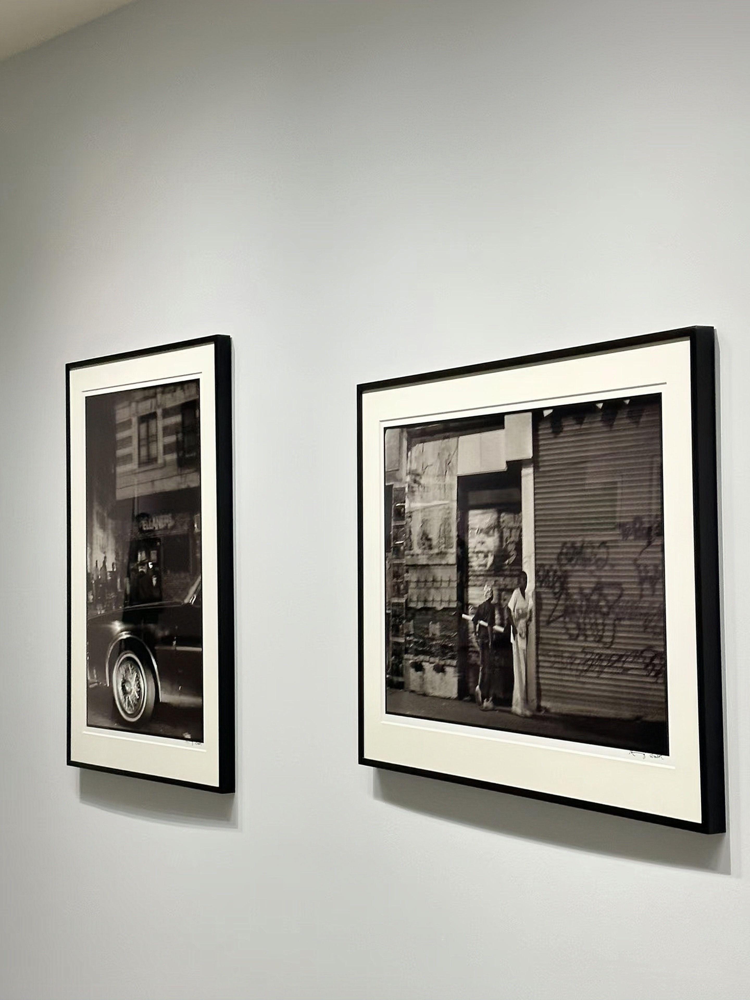
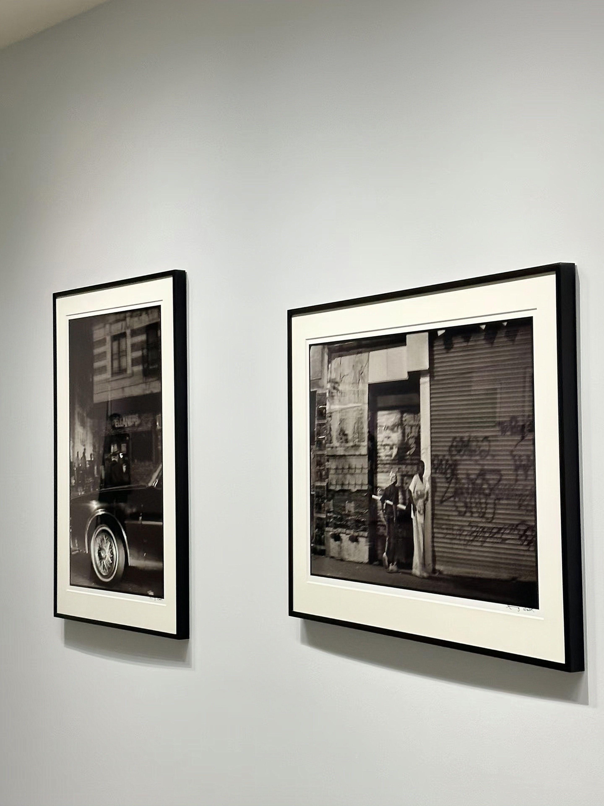

COLLECTION


COLLECTION
The Genesis of Modernism
I was born in 1937 with the vision to transform the art world, thanks to the foresight of Solomon R. Guggenheim. My journey began in 1939 with the opening of the Museum of Non-Objective Painting in New York City, showcasing a pioneering collection that featured the works of Vasily Kandinsky and other avant-garde artists. Guided by the visionary curatorship of Hilla Rebay, my mission was to challenge the conventions of the art world and expose the public to the revolutionary power of non-objective art. As my collection grew and my influence expanded, it became clear that a purpose-built space was essential to house this burgeoning vision, leading to the commissioning of renowned architect Frank Lloyd Wright to design a museum that would embody the spirit of modern art in a way no institution had before.
A Masterpiece of Architecture
In the early 1940s, as my collection continued to grow and my mission expanded, I knew that I needed a space that was as innovative and groundbreaking as the art I housed. That’s when I turned to the visionary architect Frank Lloyd Wright. His radical spiral design, conceived to break away from traditional museum layouts, was unlike anything the world had seen before. Wright’s design was not simply a building—it was a statement. It offered an organic, continuous flow of space, where visitors could experience the art in an uninterrupted journey, ascending the spiraling ramp as they moved through the collection. Opening in 1959, the Solomon R. Guggenheim Museum itself became a masterpiece, harmoniously blending architecture and art in a dynamic dialogue. The fluidity of the design, with its natural light and sweeping curves, was an invitation for viewers to engage with the art on a deeper level, immersing them not just in the works on the walls but in the building itself. Wright’s vision broke from convention, challenging the rigid, boxy forms that had dominated traditional museum architecture and presenting a space that allowed the art to breathe and evolve within it. His spiral form became a symbol of my core philosophy: art should not just be seen; it should be experienced in a way that sparks new perspectives. This was a true fusion of architecture and art, an experience that redefined how we interact with creativity and visual culture.
Odyssey of Art & Culture
In the early 1940s, as my collection continued to grow and my mission expanded, I knew that I needed a space that was as innovative and groundbreaking as the art I housed. That’s when I turned to the visionary architect Frank Lloyd Wright. His radical spiral design, conceived to break away from traditional museum layouts, was unlike anything the world had seen before. Wright’s design was not simply a building—it was a statement. It offered an organic, continuous flow of space, where visitors could experience the art in an uninterrupted journey, ascending the spiraling ramp as they moved through the collection. Opening in 1959, the Solomon R. Guggenheim Museum itself became a masterpiece, harmoniously blending architecture and art in a dynamic dialogue. The fluidity of the design, with its natural light and sweeping curves, was an invitation for viewers to engage with the art on a deeper level, immersing them not just in the works on the walls but in the building itself. Wright’s vision broke from convention, challenging the rigid, boxy forms that had dominated traditional museum architecture and presenting a space that allowed the art to breathe and evolve within it. His spiral form became a symbol of my core philosophy: art should not just be seen; it should be experienced in a way that sparks new perspectives. This was a true fusion of architecture and art, an experience that redefined how we interact with creativity and visual culture.
 
